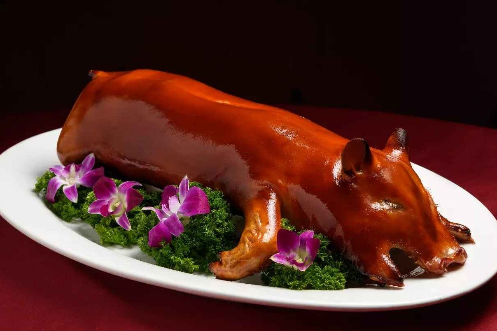
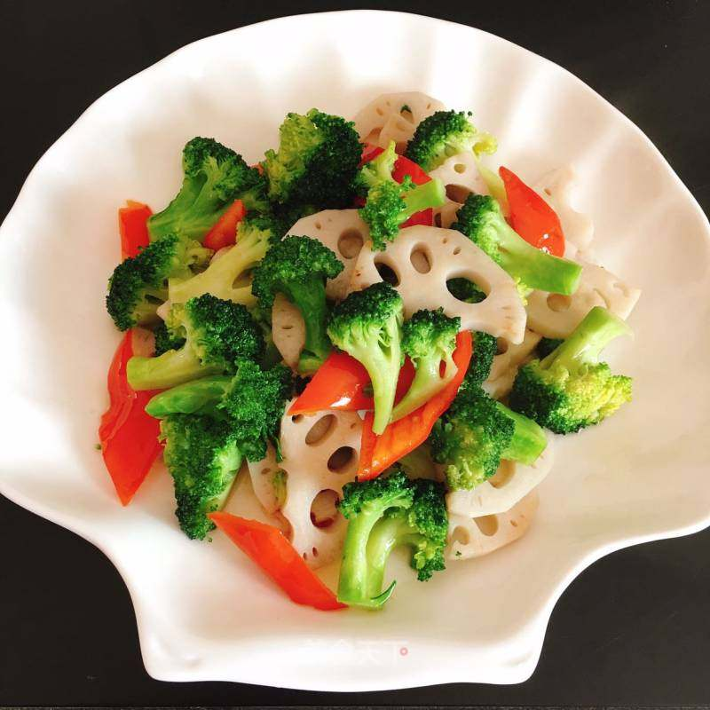
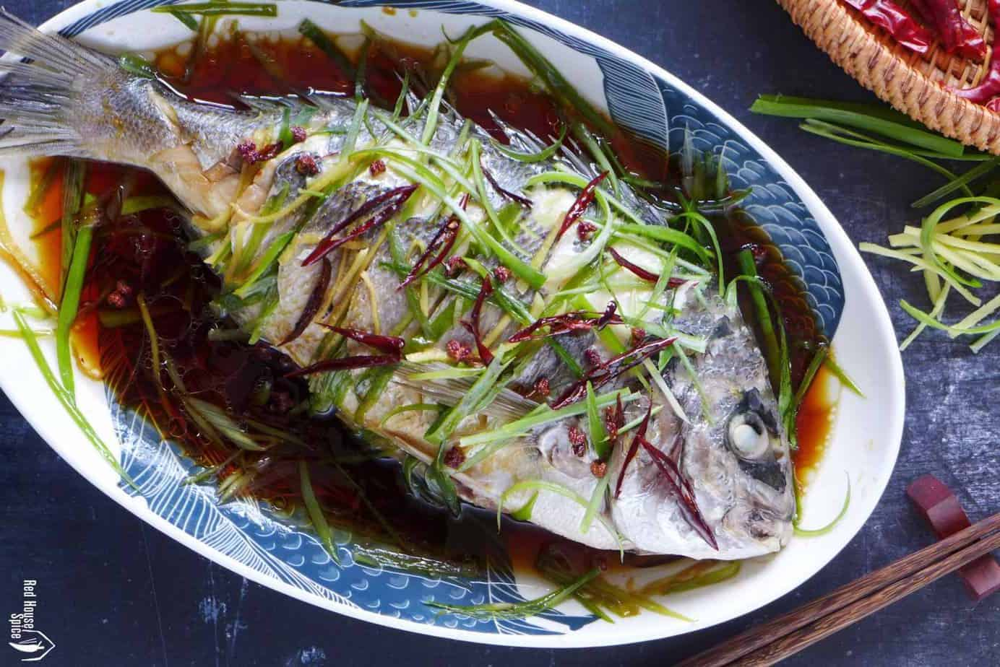
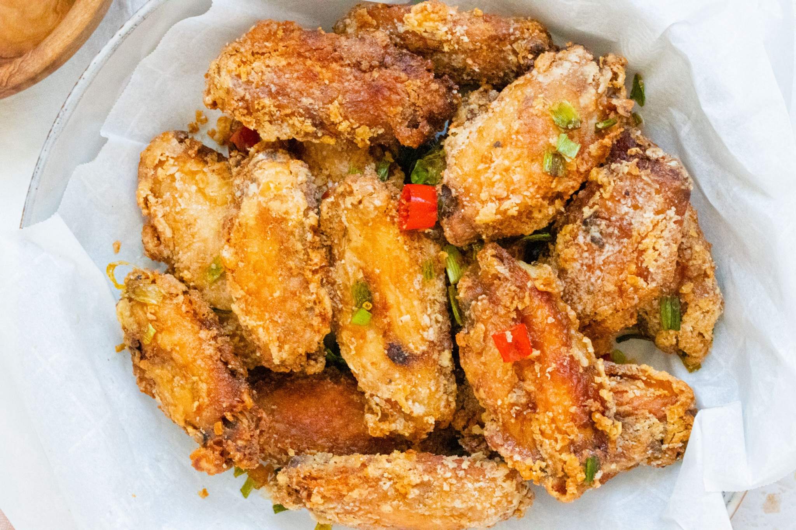

Courses
The following dishes are examples of Cantonese dishes based on traditional cooking methods, and you can usually find them in any Cantonese restaurant.
- Crispy Roasted Pig
Requires patience and skill, but the result will be delicious with crispy skin and tender meat.
- Veggies Chop Suey
This dish is stir-fried with different vegetables for its healthy and delicious taste.
- Steamed Fish
Steamed fish is a nutritious and light traditional dish perfect for healthy meals and family meals.
- Five Spices Chicken Wings
These five spices chicken wings will leave your taste buds tingling.